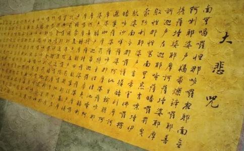

《
《大悲咒》在汉传
一者，所生之处，常逢善王。
二者，常生善国。
三者，常值好时。
四者，常逢善友。
五者，身根常得具足。
六者，道心纯熟。
七者，不犯禁戒。
八者，所有眷属，恩义和顺。
九者，资具财食，常得丰足。
十者，恒得他人，恭敬扶接。
十一者，所有财宝，无他劫夺。
十二者，意欲所求，皆悉称遂。
十三者，龙天善神，恒常拥卫。
十四者，所生之处，见佛闻法。
十五者，所闻
若有诵持大悲心陀罗尼者，得如是等十五种善生也。
诵持大悲咒，不光不用担心横死，而且来世也会非常好，叫做今生免恶死，来世得善生。
一共有15种善生，我们逐个来看看，今生命苦不要怨政府，只缘前世未修大悲咒：
1.你诵持大悲咒，来世出生的国家，就能遇到善王，就是引导人民向善的领导人。比如习近平主席，就可以称得上是善王。
有人说，那XXX是不是善王呢？这类问题一律不回答。
2.你诵持大悲咒，来世就经常生到行善的国家。不光有个善王，而且在善王的带领下，全国人民都向善，民风淳朴，夜不闭户，路不拾遗。大家的思想
3.你常诵大悲咒，来世就能经常遇到太平盛世，风调雨顺，人民安居乐业，不会是那些兵荒马乱，民不聊生的时代。
4.你诵持大悲咒，就能有缘遇到善友，引导你信佛
善友的作用是很大的，好比我们精进群，就是善友群。有部分师兄因为种种原因，退出了精进群，缺少了精进群中相互学习，共同进步的氛围，过了一段时间，猛地发现自己已经
我们精进群要想更好的成为善友群，那就应当从一开始就树立明确的宗旨，然后大家共同努力来践行。
什么宗旨呢？
在精进群里面，我们只宣传佛法，向大家介绍念佛持咒求生极乐这个法门的舒适，带动大家精进实修。
在这个过程中，我们不贪财，不贪名，用六和敬来指导我们的团队建设。
在精进群里面，如果哪天群主说进群要先捐款，时不时想一些由头来募捐，那你就可以逃离了。
我们精进群到目前为止，只有一个自发加入的助印组，人数约100人，不号召大家捐款，钱多就多印一点经书，钱少就少印一点经书，出纳，会计，审计，三权分立，帐目定期公开，阳光操作，而且都是由义工免费支持，全程零管理费。
这个助印组，原则上只接受精进群师兄的
5.你诵持大悲咒，你的身体就会没有大的缺陷，六根具足。
有人说，我这辈子也就这样了，不过我希望我以后生的小孩能够身体
那你就可以让孕妇每天念诵大悲咒，这样胎儿在母胎里也能受益，生出来的宝宝就会非常健康。
6.你诵持大悲咒，来世的时候，道心就能更加纯熟。
就好比群主带领大家去
你没有通过考验，也不用后悔，因为人家前世修得比你好，你这辈子就应当更加努力才行，不要羡慕嫉妒恨。
7.你诵持大悲咒，你来世的时候，就很容易严持戒律。
有些师兄说，怎么搞的，看到别人很轻松就能持戒，我自己却很难做到啊。
那可能是人家前世就已经种下了善根，你的善根不足，所以就不要去嫉妒别人。
有人说，我不嫉妒别人，虽然我现在还做不到
这个要分情况来看。
如果你是为了贪赞叹，贪功德而去受持五戒，那你不妨先把自己的贪心降伏了之后再去，避免你受持了五戒，到处招摇，生出我慢，那就不太好了。
如果你目前虽然还不能圆满的持戒，但是你有强烈的愿望，希望给自己制定一个更高的目标去努力，那你也可以先去
你如果受戒之后，能够严于律己，宽以待人，这个是最值得赞叹的。
五戒，如果大家有条件，应当去寺庙请
如果没有条件，比如有些师兄在海外，没有寺院，也可以自己每天发愿持戒。
戒就是一件坚固的铠甲，让你不受伤害。刚开始的时候，有些师兄可能觉得持戒是对自己的束缚，那是正常的，因为你的妄心受到束缚。等你把戒条真正落实到
8.你诵持大悲咒，你来世的时候，所有的眷属都非常和顺，讲仁义，知恩图报。
儒家说的五伦：父子有亲，君臣有义，夫妇有别，长幼有序，朋友有信。你诵持大悲咒，来世的时候，你周围的人就讲伦常。
9.你诵持大悲咒，你来世的时候，家
世俗的人，挣了钱之后，总是喜欢演说自己的成功之道，把自己吹得很神。
很少有人能真正明白，自己这辈子的财富，跟前世的福报直接相关。
这个是不是
大部分人这辈子的行为不足以与前世所造的善业或者恶业相提并论，所以这辈子的走向，是在宿业的巨大牵引力下，沿着预定的的轨迹前进。
但是极少数人，这辈子如果做了很大的善行，积累了很大的福报，他的
这个就好比国家治理，每一届政府就好象人的一生，国家的发展和走向，受到前面若干届政府的影响，当前这一届政府的行为，对国家的大势，影响通常是有限的。
但是，极少数伟大的领导人，拥有巨大的影响力，可以在这一任做出翻天覆地的大变更，让国家的走势有一个大的转折。
10.你诵持大悲咒，无论谁见到你，都恭敬和帮助你 。
11.你诵持大悲咒，你来世的时候，所有的财宝，没有人来抢夺。
所以呢，你这辈子被人偷，被人抢，也不要去埋怨，都是有前因，可能是你前世偷人家的，所以这辈子被人偷，而且你前世也没学大悲咒，所以……
12.你诵持大悲咒，你来世的时候，心想事成。
当然了，你想行善就能心想事成，你作恶就不能保佑你心想事成了。
有些人这辈子热心公益事业，但是呢，总是很艰难，发现做个善事也不容易，很难如愿。
那估计你前世没修过大悲咒啊，如果你前世修过大悲咒，这辈子要做善事，那是一呼百应，一切无碍。
13.你诵持大悲咒，你来世的时候，龙天善神，随时护佑你。
你一出门，一大群龙天
14.你诵持大悲咒，来世所生的地方，能够亲见
我们这辈子诵持大悲咒，求生极乐，那么你来世就能往生
15.你诵持大悲咒，来世就能听到正法，领悟甚深法义。
有些人听法，结果呢，听的不是正法，那就比较冤枉了，还要多走弯路，我们精进群弘扬的佛法，选择没有争议的正法经典，纯正不掺杂。
我们分享的时候，一定是先发经文原文，由于经文是文言文，所以再加一些白话，目的是希望大家看经文原文的时候，相对比较容易一点。
我们的白话一定是不圆满的，把原文附上，也便于大家明辨是非，很容易找到错误的地方。
如果哪天群主搞一个自己的法门，在
目前群主提倡的法门有两个，大家根据自己的情况，任选一个：
1 每天念佛号1万以上，求生极乐。
2 每天念大悲咒108以上，求生极乐。
观世音菩萨说：如果有人诵持大悲咒，就能得到以上15种善生。
有人说，我只要往生极乐，其他的都不稀罕。
你这个觉悟当然很高，也很聪明。因为你去了极乐世界，相当于这十五种善生都包含在里面了，而且更加
不过呢，不是每个人都能有这个觉悟，所以呢，菩萨就说了这十五种善生，让部分有缘人先种善根，或许若干世以后，他的善根成熟了，自然就会求生极乐了。